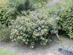
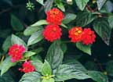
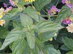
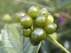

Lantana
Lantana camara
Other names
large leaf lantana
Description
A hairy, scented shrub up to 2 metres tall. Prickly. Leaves are toothed on margins. Flowers grow in clusters and are usually yellow to orange, although the flowers in New Zealand are often pink. Fruit ripens to a deep purple or black and is juicy. There are a number of types, and not all are toxic to animals.
Similar plants
Distribution
Localized in open country and bush margins in Northland. Generally restricted to warm areas. Common in gardens.
Toxin
The most poisonous part is the fruit, although the leaves are also poisonous. Green berries contain higher concentration of toxin. The main toxin is the polycyclic terpenoid lantadene A (or rhemannic acid). This causes photosensitivity.
Species affected
Sheep and cattle, also children.
Clinical signs acute
Signs within 24 hours in acute cases. Initial signs include loss of appetite with polyuria, followed by constipation or diarrhoea and dehydration. Strong smelling black fluid faeces in severely affected animals. Anorexia, haemorrhagic gastroenteritis, ataxia, reduced heart rate and reduced repiratory rate. Photosensitization is an important feature, and is hepatogenous in nature however this has not been reported in NZ. The muzzle is red brick in colour and a conjunctivitis is also likely present, due to photosensitisation, and the lips, muzzle ears and eyelids are oedematous. Mucous membranes of the eye and mouth may be yellow (icterus). Death may be within 48 hours.
Clinical signs chronic
In chronic cases blow fly and bacterial invasion of raw and exposed flesh may be seen, and corneal opacity and blindness may be seen. Death usually occurs within 1 3 weeks. In dogs, signs are limited to vomiting, weight loss, jaundice and anaemia.
Post mortem signs
Hard, dry, mucus covered faecal masses in large intestine and dry undigested plant material in the rumen ("dusty rumenal contents"). The liver is swollen and highly pigmented, gall bladder distended and the kidneys may be swollen and pale but turn green on exposure to air and cutting. Microscopically you may see necrosis of renal tubules, and hemorrhages in various organs. Icterus can be seen. Myocardial damage. Intestinal paralysis, loss of appetite, and reduced liver function commonly lead to the animal’s death from emaciation. In severe cases in cattle; ulceration of cheeks, muzzle, nostrils, tongue and gums.
Diagnosis
Pasture is scarce (e.g. drought), plant is present in environment, and clinical signs are apparent.
Differential diagnosis
Sporidesmin, cholelithiasis, leptospirosis, hepatitis, ragwort, copper poisoning, iron toxicity
Treatment
Limited. Supportive, symptomatic treatment. Give iv fluids and try to encourage to eat. Also try to increase gut motility. Physostigmine may initiate dramatic reversal of some signs within minutes, however this is contraindicated in cases where asthma, gangrene, cardiovascular disease, or mechanical obstruction of the gastrointestional or urogenital tracts exists.
Prognosis
Guarded poor, as animal generally refuses to eat or drink. There will also be varying liver and kidney damage.
Prevention
References
Conner H.E. The Poisonous Plants In New Zealand. 1992. GP Publications Ltd, Wellington
Parton K, Bruere A.N. and Chambers J.P. Veterinary Clinical Toxicology, 2nd ed. 2001. Veterinary Continuing Education Publication No. 208
Lantana poisoning of cattle and sheep in New Zealand
Black H, Carter RG
New Zealand Veterinary Journal 33(8), 136-137, 1985
|  bush |
 |
|
|
 |
||
|
 |
||
|
|
|
|